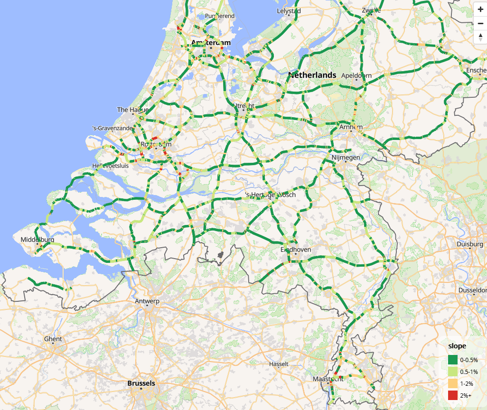

Introduction
This article aims to provide external verification of the results provided by the package. So far only one verification dataset has been used, but we hope to find others. If you know of verification datasets, please let us know — initially we planned to use a dataset from a paper on river slopes (Cohen et al. 2018), but we could find no way of extracting the underlying data to do the calculation.
For this article we primarily used the following packages, although others are loaded in subsequent code chunks.
library(slopes)
library(sf)
#> Linking to GEOS 3.12.2, GDAL 3.8.4, PROJ 9.4.0; sf_use_s2() is TRUE
#> WARNING: different compile-time and runtime versions for GEOS found:
#> Linked against: 3.12.2-CAPI-1.18.2 compiled against: 3.12.1-CAPI-1.18.1
#> It is probably a good idea to reinstall sf (and maybe lwgeom too)The results are reproducible (requires downloading input data manually and installing additional packages). To keep package build times low, only the results are presented below.
Case studies
Roads in the Netherlands
u = "https://downloads.rijkswaterstaatdata.nl/nwb-wegen/geogegevens/shapefile/NWB_hoogtebestand/01-10-2024%20Hoogtes%20Rijkswegen.zip"
f_zip = "NWB_hoogtebestand.zip"
if (!file.exists(f_zip)) {
download.file(u, f_zip)
unzip(f_zip)
# Datasets in
list.files("NWB3D_resultaten_oktober_2024.gdb")
roads_nl_layers = sf::st_layers("NWB3D_resultaten_oktober_2024.gdb")
# Driver: OpenFileGDB
# Available layers:
# layer_name geometry_type features
# 1 NWB3D_resultaten_oktober_2024_wegvakken 3D Multi Line String 16456
# 2 NWB3D_resultaten_oktober_2024_vertexpunten 3D Point 1095615
# fields crs_name
# 1 59 Amersfoort / RD New
# 2 59 Amersfoort / RD New
roads_nl = sf::st_read("NWB3D_resultaten_oktober_2024.gdb", layer = "NWB3D_resultaten_oktober_2024_wegvakken")
names(roads_nl)
# [1] "WVK_ID" "BST_CODE" "WVK_BEGDAT" "JTE_ID_BEG"
# [5] "JTE_ID_END" "WEGBEHSRT" "WEGNUMMER" "WEGDEELLTR"
# [9] "HECTO_LTTR" "RPE_CODE" "ADMRICHTNG" "RIJRICHTNG"
# [13] "STT_NAAM" "STT_BRON" "WPSNAAM" "GME_ID"
# [17] "GME_NAAM" "HNRSTRLNKS" "HNRSTRRHTS" "E_HNR_LNKS"
# [21] "E_HNR_RHTS" "L_HNR_LNKS" "L_HNR_RHTS" "BEGAFSTAND"
# [25] "ENDAFSTAND" "BEGINKM" "EINDKM" "POS_TV_WOL"
# [29] "WEGBEHCODE" "WEGBEHNAAM" "DISTRCODE" "DISTRNAAM"
# [33] "DIENSTCODE" "DIENSTNAAM" "WEGTYPE" "WGTYPE_OMS"
# [37] "ROUTELTR" "ROUTENR" "ROUTELTR2" "ROUTENR2"
# [41] "ROUTELTR3" "ROUTENR3" "ROUTELTR4" "ROUTENR4"
# [45] "WEGNR_AW" "WEGNR_HMP" "GEOBRON_ID" "GEOBRON_NM"
# [49] "BRONJAAR" "OPENLR" "BAG_ORL" "FRC"
# [53] "FOW" "ALT_NAAM" "ALT_NR" "REL_HOOGTE"
# [57] "Hoogte_bron" "Kwaliteitlaag" "SHAPE_Length" "SHAPE"
# Plot the slopes (variable called REL_HOOGTE):
summary(roads_nl$REL_HOOGTE)
# xyz
roads_nl_xyz = sf::st_coordinates(roads_nl)
head(roads_nl_xyz)
hist(roads_nl_xyz[, "Z"], breaks = 50, main = "Histogram of elevation values (m)", xlab = "Elevation (m)")
plot(roads_nl["REL_HOOGTE"])
summary(sf::st_geometry_type(roads_nl))
roads_nl$slope = roads_nl |>
sf::st_cast("LINESTRING") |>
slopes::slope_xyz() * 100
summary(roads_nl$slope)
library(tmap)
library(tmap.mapgl)
m = tm_shape(roads_nl) +
tm_lines(
col = "slope",
col.scale = tm_scale_intervals(
breaks = c(-1, 0.5, 1, 2, 20),
labels = c("0-0.5%", "0.5-1%", "1-2%", "2%+"),
values = cols4all::c4a("-brewer.rd_yl_gn")
),
lwd = 5
)
tmap_mode("maplibre")
m
}
# DEM for eu:
install.packages("CopernicusDEM")
system("msiexec.exe /i https://awscli.amazonaws.com/AWSCLIV2.msi")
# Test it's installed:
system("aws --version")
# Find location of aws cli from powershell (equivalent of `which aws` on Linux):
# Get-Command aws | Select-Object -ExpandProperty Source
# C:\Program Files\Amazon\AWSCLIV2\aws.exe
current_path = Sys.getenv("PATH")
aws_path = "C:\\Program Files\\Amazon\\AWSCLIV2"
new_path = paste(aws_path, current_path, sep = ";")
Sys.setenv(PATH = new_path)
# Now aws should work
system("aws --version")
# Download DEM for Brussels 6 km from center
zones = zonebuilder::zb_zone("Brussels", n_circles = 3)
region = sf::st_union(zones$geometry) |>
sf::st_make_valid()
sf::sf_use_s2(TRUE) # disable s2 for this operation
region_plus_100m = sf::st_buffer(region, dist = 100)
mapview::mapview(region) +
mapview::mapview(region_plus_100m)
sf::sf_use_s2(FALSE) # disable s2 for this operation
dir_save_tifs = "dems-brussels"
dem = CopernicusDEM::aoi_geom_save_tif_matches(
sf_or_file = region_plus_100m,
dir_save_tifs = dir_save_tifs,
resolution = 30,
crs_value = 4326,
threads = parallel::detectCores(),
verbose = TRUE
)
dems = list.files(dir_save_tifs, full.names = TRUE)
dem_terra = terra::rast(dems)
names(dem_terra)
dem_cropped = terra::crop(dem_terra, region_plus_100m)
mapview::mapview(dem_cropped)
travel_network = osmactive::get_travel_network(
region,
boundary = region,
boundary_type = "clipsrc"
)
plot(travel_network$geometry)
travel_network = travel_network |>
sf::st_filter(region, .predicate = sf::st_within)
cycle_net = osmactive::get_cycling_network(travel_network)
drive_net = osmactive::get_driving_network(travel_network)
cycle_net = osmactive::distance_to_road(cycle_net, drive_net)
cycle_net = osmactive::classify_cycle_infrastructure(cycle_net, include_mixed_traffic = TRUE)
names(cycle_net)
mapview::mapview(cycle_net, zcol = "cycle_segregation")
nrow(cycle_net)
# Calculate slopes with the slopes package:
# Add elevation to cycle network segments
sf::st_crs(dem_cropped) == sf::st_crs(cycle_net)
# check the extents of both:
mapview::mapview(dem_cropped) + mapview::mapview(cycle_net)
cycle_net_clean = sf::st_cast(cycle_net, "LINESTRING")
cycle_net_xyz = elevation_add(cycle_net_clean, dem = dem_cropped)
summary(sf::st_geometry_type(cycle_net_xyz))
# Calculate slopes for each segment
cycle_net_xyz$slope = slope_xyz(cycle_net_xyz, lonlat = TRUE, fun = slope_matrix_weighted)
# cycle_net_xyz$slope = slope_xyz(cycle_net_xyz, lonlat = TRUE, fun = slope_matrix_mean)
summary(cycle_net_xyz$slope)
# Convert to percentage:
cycle_net_xyz = cycle_net_xyz |>
# Convert to factor with greater than 5 being "5+"
dplyr::mutate(
slope_percent = dplyr::case_when(
slope < 0.02 ~ as.character("0-2"),
slope < 0.05 ~ as.character("2-5"),
slope < 0.08 ~ as.character("5-8"),
TRUE ~ "8+"
)
)
table(cycle_net_xyz$slope_percent)
# Drop z dimension
cycle_net_slopes = sf::st_zm(cycle_net_xyz) |>
dplyr::transmute(osm_id, highway, cycle_segregation, slope = round(slope, 3), slope_percent)
summary(duplicated(cycle_net_slopes$geometry))
mapview::mapview(cycle_net_slopes, zcol = "slope_percent", legend = TRUE)
sf::write_sf(cycle_net_slopes, "cycle_net_slopes_brussels.gpkg", delete_dsn = TRUE)
system("gh release upload v1.0.1 cycle_net_slopes_brussels.gpkg --clobber")
cycle_net_slopes = sf::read_sf("cycle_net_slopes_brussels.gpkg")
# install cran version
remotes::install_dev("tmap")
# Save with tmap
library(tmap)
v = cols4all::c4a("brewer.rd_yl_gn", n = 4) |>
rev()
m = tm_shape(cycle_net_slopes) +
tm_lines(
col = "slope_percent",
col.scale = tm_scale(values = v),
lwd = 2,
popup.vars = FALSE
)
m
tmap_save(m, "cycle_net_slopes_brussels.html")
browseURL("cycle_net_slopes_brussels.html")
system("gh release upload v1.0.1 cycle_net_slopes_brussels.html --clobber")
# url of the file:
u_release = "https://github.com/ropensci/slopes/releases/download/v1.0.1/cycle_net_slopes_brussels.html"
download.file(u_release, "cycle_net_slopes_brussels.html")
Three-dimensional traces of roads dataset
An input dataset, comprising a 3D linestring recorded using a dual frequency GNSS receiver (a Leica 1200) with a vertical accuracy of 20 mm (Ariza-López et al. 2019) was downloaded from the figshare website as a .zip file and unzipped and inflated in the working directory as follows (not evaluated to reduce package build times):
download.file("https://ndownloader.figshare.com/files/14331185", "3DGRT_AXIS_EPSG25830_v2.zip")
unzip("3DGRT_AXIS_EPSG25830_v2.zip")
trace = sf::read_sf("3DGRT_AXIS_EPSG25830_v2.shp")
plot(trace)
nrow(trace)
#> 11304
summary(trace$X3DGRT_h)
#> Min. 1st Qu. Median Mean 3rd Qu. Max.
#> 642.9 690.3 751.4 759.9 834.3 884.9 To verify our estimates of hilliness, we generated slope estimates for each segment and compared them with Table 7 in Ariza-López et al. (2019). The absolute gradient measure published in that paper were:
res_gps = c(0.00, 4.58, 1136.36, 6.97)
res_final = c(0.00, 4.96, 40.70, 3.41)
res = data.frame(cbind(
c("GPS", "Dual frequency GNSS receiver"),
rbind(res_gps, res_final)
))
names(res) = c("Source", "min", " mean", " max", " stdev")
knitr::kable(res, row.names = FALSE)| Source | min | mean | max | stdev |
|---|---|---|---|---|
| GPS | 0 | 4.58 | 1136.36 | 6.97 |
| Dual frequency GNSS receiver | 0 | 4.96 | 40.7 | 3.41 |
# mapview::mapview(trace) # check extent: it's above 6km in height
# remotes::install_github("hypertidy/ceramic")
loc = colMeans(sf::st_coordinates(sf::st_transform(trace, 4326)))
e = ceramic::cc_elevation(loc = loc[1:2], buffer = 3000)
trace_projected = sf::st_transform(trace, 3857)
plot(e)
plot(trace_projected$geometry, add = TRUE)
The slopes were estimated as follows:
# source: https://www.robinlovelace.net/presentations/munster.html#31
points2line_trajectory = function(p) {
c = st_coordinates(p)
i = seq(nrow(p) - 2)
l = purrr::map(i, ~ sf::st_linestring(c[.x:(.x + 1), ]))
lfc = sf::st_sfc(l)
a = seq(length(lfc)) + 1 # sequence to subset
p_data = cbind(sf::st_set_geometry(p[a, ], NULL))
sf::st_sf(p_data, geometry = lfc)
}
r = points2line_trajectory(trace_projected)
# summary(st_length(r)) # mean distance is 1m! Doesn't make sense, need to create segments
s = slope_raster(r, e = e)
slope_summary = data.frame(min = min(s), mean = mean(s), max = max(s), stdev = sd(s))
slope_summary = slope_summary * 100
knitr::kable(slope_summary, digits = 1)| min | mean | max | stdev |
|---|---|---|---|
| 0 | 6.2 | 48.2 | 5.6 |
Combined with the previous table from Ariza-López et al. (2019), these results can be compared with those obtained from mainstream GPS, and an accurate GNSS receiver:
| Source | min | mean | max | stdev |
|---|---|---|---|---|
| GPS | 0 | 4.58 | 1136.36 | 6.97 |
| Dual frequency GNSS receiver | 0 | 4.96 | 40.7 | 3.41 |
| Slopes R package | 0 | 6.2 | 48.2 | 5.6 |
It is notable that the package substantially overestimates the gradient, perhaps due to the low resolution of the underlying elevation raster. However, the slopes package seems to provide less noisy slope estimates than the GPS approach, with lower maximum values and low standard deviation.